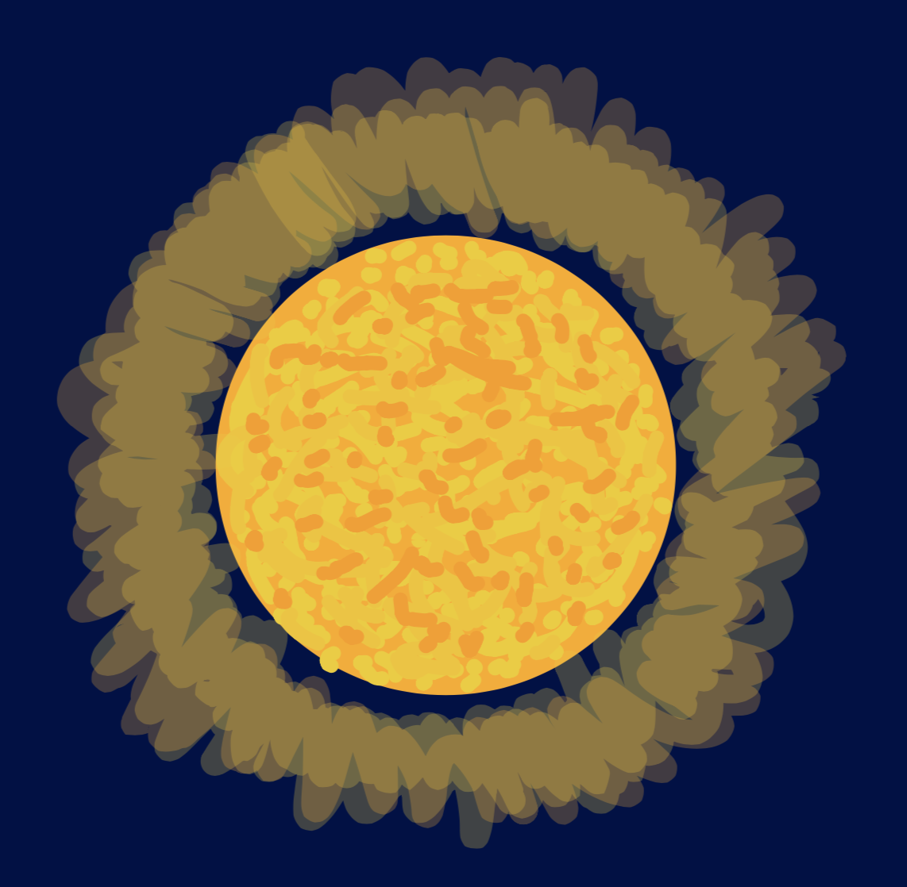
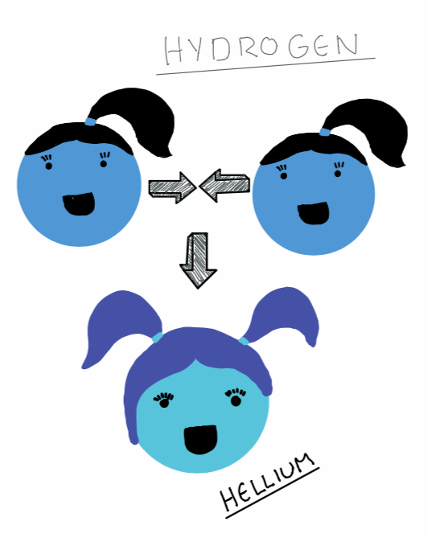

From previous posts we learned about the beginning of our universe, what it is made of and the main force, gravity, that governs it. What can we find in our universe? Well the first objects in the universe were the very ones which lit it up...
Well the main difference is that stars emit light when planets and other objects don't. But how do they emit light? They emit light because they have fusion inside their core. So ermmm... how does that work? A star is mainly composed of hydrogen. So when the star gains enough mass the nuclei of hydrogen atoms are experiencing so much pressure that they fuse into a heavier element, which is called hellium. And every time that happens there is a little bit of energy created that is converted into photons which then travel, from the star's core, for a long time to the star's surface and then further into space.
Spectra is the light that stars emit and it si when you divide the incoming light from an object into individual colors or wavelengths .
As seen in the picture above spectra consists of all the colors of the rainbow and black lines.
Stars emit two different kinds of spectra: The constant spectra (rainbow colors) and every star has an atmosphere, and it contains elements and those elements absorb the light from the spectra, thus causing the dark gaps. And with the help of those dark gaps we can determine a stars composition.